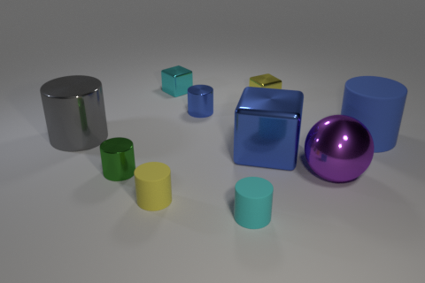
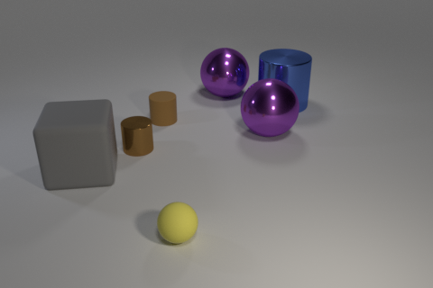

Vision-language models (VLMs) excel at descriptive tasks, but §whether they truly understand scenes from visual observations remains uncertain.
We introduce IR3D-Bench, a benchmark challenging VLMs to demonstrate understanding through active creation rather than passive recognition.
Grounded in the §analysis-by-synthesis paradigm,
IR3D-Bench §tasks Vision-Language Agents (VLAs)
with actively using programming and rendering tools to recreate the underlying 3D structure of an input image,
achieving §agentic inverse rendering through tool use.
This "understanding-by-creating" approach probes the tool-using generative capacity of VLAs,
moving beyond the descriptive or conversational capacity measured by traditional scene understanding benchmarks.
We provide §a comprehensive suite of metrics to evaluate geometric accuracy, spatial relations, appearance attributes, and overall plausibility.
§Initial experimental results on agentic inverse rendering powered by various state-of-the-art VLMs highlight current limitations, particularly in visual precision rather than basic tool usage.
Humans demonstrate true understanding through creation and recreate observed scenes because we genuinely comprehend spatial relationships and physical attributes.
In contrast, current Vision-Language Agents (VLAs) are primarily evaluated on recognition tasks like captioning or QA, which fail to assess deeper understanding.
Can VLAs truly understand what they see ? IR3D-Bench test it by letting them recreating the observations.
Stage 1: Dataset Integration and Inverse Rendering
CLEVR Dataset Integration
We use the CLEVR dataset, a popular benchmark for 3D vision tasks. Our work uses the validation split, which includes 15,000 synthetic images. Each image contains 3 to 10 objects with detailed annotations covering their 3D coordinates, pixel-space projections, shape, color, size, material, and spatial relationships. These rich annotations make CLEVR ideal for evaluating 3D reconstruction and spatial reasoning in a controlled environment.


Click the image to view the GT annotations
Narrowing the gap between CLIP and SSL models
Above, we observe that DINOv2 stands midway between SSL models and CLIP models on general VQA and knowledge VQA tasks,
even outperforming some CLIP models on vision-centric benchmarks with higher resolution.
We investigate unfreezing the vision backbones and increasing the amount of visual fine-tuning data to narrow this gap.
In Figure 5, we observe that by unfreezing the vision backbone,
the DINOv2-based MLLM fine-tuned with 5M data surpasses the MLLM trained with a CLIP model on 0.7M data.
Additionally, the gap between DINOv2 and the CLIP models is reduced under the 5M data experiment setting.
Figure 5: By unfreezing the visual backbone and fine-tuning on 5M examples, the gap between CLIP and DINOv2 can be narrowed.
Combining Multiple Vision Encoders
As observed in Figure 4, different vision models excel in different aspects of MLLM performance.
We explore the potential of combining multiple vision encoders to leverage their distinctive representations.
Given that different vision encoders use varying architectures and image resolutions, we interpolate the output visual tokens to a fixed number, 576.
The results are tabulated in Table 2, where we observe consistent performance improvements with the addition of more models.
Vision Backbone
General
Knowledge
OCR & Chart
Vision-Centric
Encoders
Average
MMEP
MMB
SEEDI
GQA
SQAI
MMMUV
MathVistaM
AI2D
ChartQA
OCRBench
TextVQA
DocVQA
MMVP
RealWorldQA
CV-Bench2D
CV-Bench3D
SigLIP+DINOv2
51.61
1,432.02
61.28
65.99
63.30
68.82
35.69
29.40
60.01
43.00
35.70
60.40
37.54
30.00
53.99
55.52
53.58
SigLIP+DINOv2+ConvNext
54.52
1,503.51
63.83
67.97
63.95
70.40
35.99
29.30
60.69
48.20
36.90
64.97
45.53
34.67
58.69
55.74
60.33
SigLIP+DINOv2+ConvNext+CLIP
54.74
1,479.46
63.32
67.63
64.04
71.39
35.49
29.10
59.88
50.24
39.60
64.55
46.12
32.67
58.95
58.54
60.42
SigLIP+ConvNext
54.53
1,494.97
64.60
67.98
63.58
71.05
34.90
29.80
60.85
50.64
38.00
64.53
46.52
32.00
57.91
58.83
56.58
CLIP+ConvNext
54.45
1,511.08
63.83
67.41
63.63
70.80
35.09
30.40
59.91
51.32
35.00
64.45
47.88
33.33
57.25
56.32
59.08
SigLIP+DINOv2+ConvNext
53.78
1,450.64
63.57
67.79
63.63
71.34
34.80
30.20
61.04
49.32
37.70
64.05
45.83
30.00
56.21
58.08
54.33
SigLIP+CLIP+ConvNext
54.53
1,507.28
63.23
68.64
63.63
71.10
35.89
30.90
59.97
52.36
38.50
65.40
47.92
28.67
57.25
57.66
55.92
Table 2: All Benchmark Results for Model Ensemble with 1.2M Adapter Data + 737K
Instruction Tuning Data
However, this strategy has two limitations:
1) it employs interpolation, which can potentially lead to information loss, especially on vision encoders with high-resolution feature maps, and
2) it treats each model equally by simple concatenation.
Therefore, we seek a more effective strategy that fully leverages model combinations with less information loss and more flexibility.
Spatial Vision Aggregator (SVA): A New Connector Design
To effectively aggregate features from multiple vision encoders and reduce information loss during interpolation, we use a set of learnable latent queries that interact with multiple vision features through cross-attention layers.
In particular, our approach incorporates two new vision-centric design principles:
We encode spatial inductive bias by explicitly localizing the aggregation space for each token in the query.
We perform vision feature aggregation multiple times across the LLM layers, allowing the model to repeatedly reference necessary visual information.
Figure 6: Spatial Vision Aggregator (SVA).
Instruction Tuning Data for Training MLLMs
Previous work highlights the importance of data in training MLLMs, but explicit investigations are limited.
In this study, we gather all available instruction tuning data and examine data curation by enhancing diversity, balancing sources, and improving mixtures.
Data Collection
Collecting Instruction Tuning Data from existing data sources
We first use existing multimodal benchmarks and datasets involving visual interaction data,
such as Visual Question Answering (VQA) and OCR data.
We also collect a small volume of high-quality language-only instruction-following data to maintain its language ability.
Figure 7: Cambrian-7M: A Large-Scale Curated Instruction Tuning Dataset for Training MLLM.
Targeted Internet Data Collection Engine
We also introduce a data engine designed to create large-scale, reliable,
high-quality knowledge-based multimodal instruction tuning data.
Figure 8: Targeted Internet Data Collection Engine.
Cambrian-10M
To this end, we create a large pool of instruction tuning data, which we refer to as Cambrian-10M.
This pool contains approximately 9784k data points, offering a diverse range of data for our work and future research.
We visualize its composition in Figure 7.
Data Curation
Cambrian-10M is a large pool of instruction tuning data sourced from a variety of data sources,
with an unbalanced data ratio between categories.
Here, we take a preliminary step to study data curation by improving data balancing and adjusting data ratios.
Data Balancing
We follow previous work to set thresholds t
for the number of data points from a single data source.
We choose t = 150k, 250k, 350k, and 450k in this section and observe an
elbow effect in Table 3—finding that a threshold between 250k and 350k work the best for Cambrian-10M.
Figure 9: Data Balancing via Applying Thresholds on Data Sources.
Average
General
Knowledge
OCR & Chart
Vision-Centric
150k
53.7
68.0
51.3
45.2
50.5
250k
54.3
68.1
51.5
45.3
52.2
350k
54.3
67.4
51.4
46.0
52.3
450k
54.2
68.0
52.2
45.5
50.7
Table 3: Threshold 𝑡 value between 250k and 350k obtains better performance.
Data Ratio
Given the various capabilities of different types of visual instruction tuning data, it is essential to balance the ratio of these data types.
We conduct pilot experiments with a fixed dataset size of 1350k,
examining the impact of different data ratios on downstream performance.
We visualize the results in Figure 10 and summarize our findings as follows:
(i) Balancing General, OCR, and Language data is crucial.
(ii) Performance on knowledge-intensive tasks is influenced by multiple factors,
often requiring a mix of OCR, chart, reasoning, and general perception.
Figrue 10: Exploring instruction tuning data mixture ratios.
Cambrian-7M
By applying data filtering to Cambrian-10M with our identified data ratio, we create a smaller but higher-quality dataset called Cambrian-7M.
Table 4 showcases the benefits of a well-balanced and carefully curated dataset. Despite having fewer samples, Cambrian-7M demonstrates improved performance.
Average
General
Knowledge
OCR & Chart
Vision-Centric
LLaVA-665K
40.7
64.7
45.2
20.8
32.0
Cambrian-10M
54.8
68.7
51.6
47.3
51.4
Cambrian-7M
55.9
69.6
52.6
47.3
54.1
Table 4: Performance improves with better instruction tuning data curation.
Alleviating the "Answer Machine Phenomenon" via System Prompts
Here, we investigate a phenomenon we term the "answer machine phenomenon."
We observe that a well-trained MLLM may excel at VQA benchmarks, but lack basic conversational abilities and default to outputting short, curt responses (see examples in Figure 5).
To address this, we find that incorporating additional system prompts during training mitigates this phenomenon.
We append prompts such as "Answer the question using a single word or phrase."
before questions that generate a single word or phrase in the response.
We observe that after integrating these system prompts, the model's benchmark performance remains unchanged,
while its conversational ability significantly improves.
Figure 11: Incorporating System Prompt in Instruction Tuning Data alleviates the "Answer Machine Phenomenon".
State of the Art MLLM Performance
Finally, we leverage the insights from all of our previous studies to train a high-performance Cambrian model.
We train with three different sizes of LLM backbones: LLaMA-3-Instruct-8B, Vicuna-1.5-13B, and Hermes-2-Yi-34B.
Our visual tower uses a combination of four models—SigLIP, CLIP, DINOv2, and OpenCLIP ConvNeXt
(see Combining Multiple Vision Encoders) with the Spatial Vision Aggregator.
We use 2.5M adapter data and Cambrian-7M instruction tuning data (see Data Curation).
We evaluate our models on the categorized benchmarks, and tabulate the results in Table 5. Cambrian-1 exceeds other open-source models such as LLaVA-NeXT and Mini-Gemini, and achieves comparable performance on a number of benchmarks with the best proprietary models such as GPT-4V, Gemini-Pro, and MM-1.
Model
General
Knowledge
OCR & Chart
Vision-Centric
Method
# Vis Tok.
Avg
MMEP
MMB
SEEDI
GQA
Avg
SQAI
MMMUV
MathVistaM
AI2D
Avg
ChartQA
OCRBench
TextVQA
DocVQA
Avg
MMVP
RealworldQA
CV-Bench2D
CV-Bench3D
GPT-4V
UNK.
63.0
1409.4
75.8
69.1
36.8
65.2
75.7
56.8
49.9
78.2
77.4
78.5
64.5
78.0
88.4
62.4
50.0
61.4
64.3
73.8
Gemini-1.0 Pro
UNK.
-
1496.6
73.6
70.7
-
-
79.5
47.9
45.2
-
-
-
65.9
-
-
-
-
-
-
-
Gemini-1.5 Pro
UNK.
-
-
-
-
-
-
-
58.5
52.1
80.3
-
81.3
-
73.5
86.5
-
-
67.5
-
-
Grok-1.5
UNK.
-
-
-
-
-
-
-
53.6
52.8
88.3
-
76.1
-
78.1
85.6
-
-
68.7
-
-
MM-1-8B
144
-
1529.3
72.3
69.9
-
-
72.6
37.0
35.9
-
-
-
-
-
-
-
-
-
-
-
MM-1-30B
144
-
1637.6
75.1
72.1
-
-
81.0
44.7
39.4
-
-
-
-
-
-
-
-
-
-
-
Base LLM: Llama-3-Ins-8B
Mini-Gemini-HD-8B
2880
72.7
1606.0
72.7
73.2
64.5
55.7
75.1
37.3
37.0
73.5
62.9
59.1
47.7
70.2
74.6
51.5
18.7
62.1
62.2
63.0
LLaVA-NeXT-8B
2880
72.5
1603.7
72.1
72.7
65.2
55.6
72.8
41.7
36.3
71.6
63.9
69.5
49.0
64.6
72.6
56.6
38.7
60.1
62.2
65.3
Cambrian-1-8B
576
73.1
1,547.1
75.9
74.7
64.6
61.3
80.4
42.7
49.0
73.0
71.3
73.3
62.4
71.7
77.8
65.0
51.3
64.2
72.3
72.0
Base LLM: Vicuna-1.5-13B
Mini-Gemini-HD-13B
2880
70.7
1597.0
68.6
70.6
63.7
54.1
71.9
37.3
37.0
70.1
60.8
56.6
46.6
70.2
69.8
49.4
19.3
57.5
53.6
67.3
LLaVA-NeXT-13B
2880
69.9
1575.0
70.0
65.6
65.4
53.7
73.5
36.2
35.1
70.0
62.9
62.2
51.4
67.1
70.9
55.9
36.0
59.1
62.7
65.7
Cambrian-1-13B
576
73.7
1,610.4
75.7
74.4
64.3
60.2
79.3
40.0
48.0
73.6
71.3
73.8
61.9
72.8
76.8
62.2
41.3
63.0
72.5
71.8
Base LLM: Hermes2-Yi-34B
Mini-Gemini-HD-34B
2880
76.2
1659.0
80.6
75.3
65.8
62.4
77.7
48.0
43.4
80.5
68.1
67.6
51.8
74.1
78.9
63.8
37.3
67.2
71.5
79.2
LLaVA-NeXT-34B
2880
76.0
1633.2
79.3
75.9
67.1
62.5
81.8
46.7
46.5
74.9
67.7
68.7
54.5
69.5
78.1
64.0
47.3
61.0
73.0
74.8
Cambrian-1-34B
576
76.8
1689.3
81.4
75.3
65.8
67.0
85.6
49.7
53.2
79.7
71.9
75.6
60.0
76.7
75.5
68.5
52.7
67.8
74.0
79.7
Table 5: Cambrian-1 outperforms other open-source models and achieves comparable performance with proprietary models, while using only 576 visual tokens.
Figure 12: Cambrian-1 outperforms other open-source models and achieves comparable performance with proprietary models.
Conclusion
To conclude, Cambrian-1 is a family of state-of-the-art MLLMs that achieve top performance across diverse benchmarks
and excel in visual-centric tasks. We provide model weights, open-source code, datasets, and detailed recipes for model training and evaluation.
We hope our work will strengthen the open research community and accelerate research in both visual representation learning and multimodal systems.
BibTeX
@article{liu2025ir3d,
title={IR3D-Bench: Evaluating Vision-Language Model Scene Understanding as Agentic Inverse Rendering},
author={Liu, Hengyu and Li, Chenxin and Li, Zhengxin and Wu, Yipeng, and Li, Wuyang and Yang, Zhiqin and Zhang, Zhenyuan and Lin, Yunlong and Han, Sirui and Feng, Brandon},
journal={arXiv preprint},
year={2025}
}